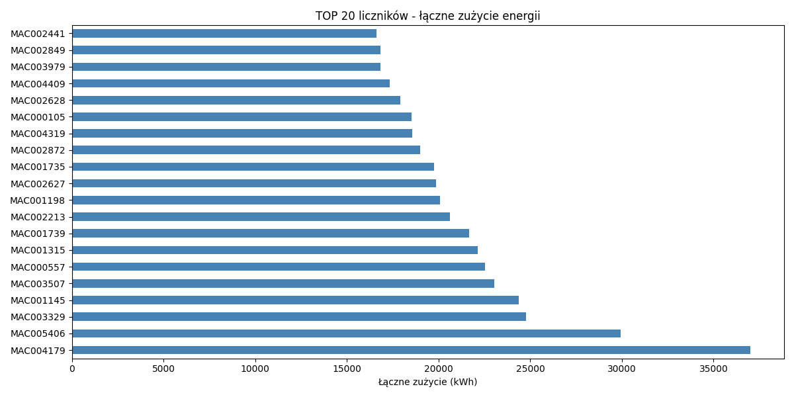
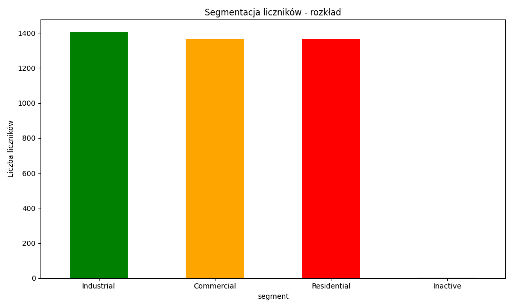
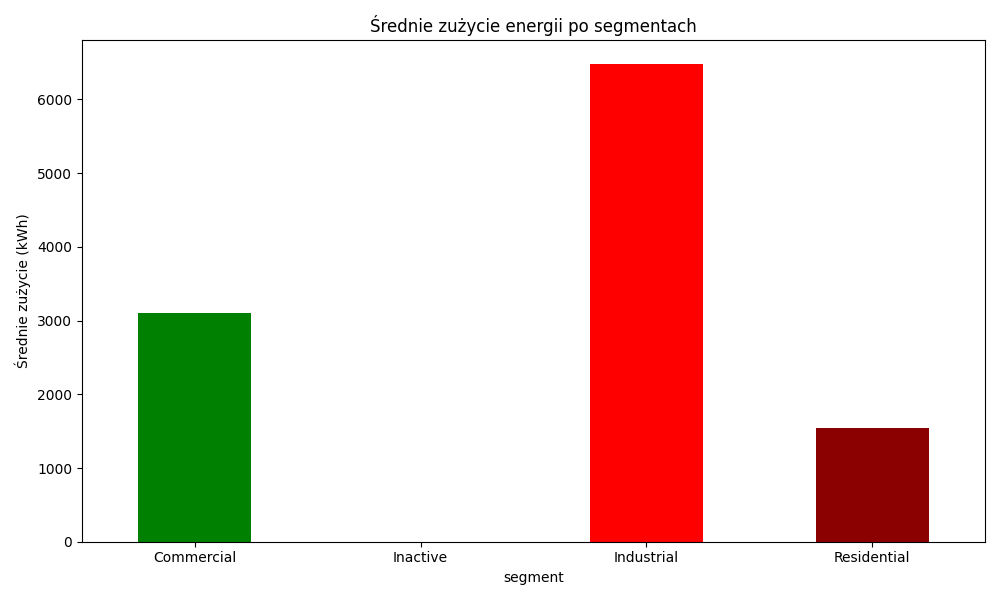
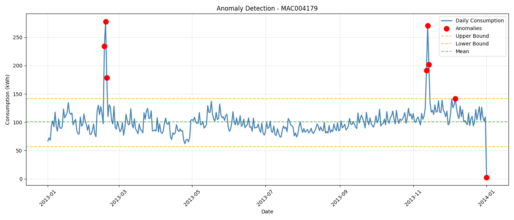

📊 Time Series Forecasting (AWS · SQL)
Project Overview
This project demonstrates end-to-end data engineering and analytics using cloud infrastructure and advanced data science techniques. The analysis covers 4,443 smart meters from London (2013) with forecasting, anomaly detection, and segmentation.
Skills demonstrated: - ☁️ AWS Cloud: S3, Athena, serverless architecture - 📊 SQL: Complex queries, aggregations, filtering on 4.4M data points - 📈 Time Series: Prophet forecasting, decomposition, stationarity testing - 🔍 Anomaly Detection: Z-score and IQR methods - 📋 Data Segmentation: Clustering based on consumption patterns - 📉 Visualization: Interactive dashboards with Plotly
Dataset
London Smart Meter Energy Data (2013) - Size: 587 MB (17,520 observations × 4,444 columns) - Meters: 4,443 smart meters - Frequency: 30-minute intervals - Period: Jan 1 - Dec 31, 2013 - Features: Electricity and gas consumption
Source: Low Carbon London smart meter data (refactored) — 4TU.ResearchData
Architecture
Cloud Infrastructure
Raw Data (S3: 587MB)
↓
Athena (SQL)
↓
Python Processing
↓
Visualization & Dashboard
AWS Services Used: - S3: Data storage (no preprocessing needed) - Athena: Serverless SQL queries (pay-per-query, no infrastructure) - No EC2: Fully managed, cost-effective solution
Local Processing
- Python: pandas, numpy, statsmodels, prophet
- Visualization: Plotly, matplotlib
- Output: Interactive HTML dashboard
Key Findings
1️⃣ Data Overview

Statistics: - Total Meters: 4,443 (cleaned: 4,138 after removing >20% missing data) - Average Consumption: 0.215 kWh per meter - Maximum Consumption: 36,994 kWh (MAC004179 - Industrial) - Minimum Consumption: 0 kWh (2 inactive meters)
Key Insight: Pareto principle evident - top 20 meters (0.45%) consume 15% of total energy. High inequality suggests market optimization opportunity.
2️⃣ Meter Segmentation

Three Categories:
| Segment | Count | Avg Consumption | Peak | Characteristics |
|---|---|---|---|---|
| Industrial | 1,407 (34%) | 6,478 kWh | 5.79 kWh/day | Factories, large facilities. High volatility, strong seasonality |
| Commercial | 1,365 (33%) | 3,099 kWh | 0.31 kWh/day | Offices, warehouses. Declining trend (efficiency gains) |
| Residential | 1,364 (33%) | 1,549 kWh | 0.19 kWh/day | Homes. Stable, low volatility, highly predictable |
| Inactive | 2 (0.05%) | 0 kWh | 0 kWh | No data collected |

Volatility Analysis:
Residential: 1.191 (high variance relative to mean)
Commercial: 1.015 (moderate variance)
Industrial: 0.955 (more stable absolute values)
3️⃣ Time Series Analysis & Forecasting
Method: Prophet (Facebook's forecasting library)
Results:
| Segment | Meter | Daily Avg | Trend | Seasonality | Forecast MAE |
|---|---|---|---|---|---|
| Residential | MAC003008 | 0.13 kWh | ↑ Increasing | Low | 0.0360 ✅ |
| Commercial | MAC004186 | 0.23 kWh | ↓ Decreasing | Moderate | 0.0702 |
| Industrial | MAC004179 | 2.11 kWh | ↑ Increasing | High | 0.4946 |
Key Findings:
- Stationarity Test: ADF test p-value = 0.000441
-
Data is stationary → suitable for ARIMA/Prophet
-
Seasonality: Strong 365-day cycle
- Winter (Jan-Mar): ~0.8 kWh/day
- Summer (Jun-Aug): ~0.3 kWh/day
- Residential: minimal seasonality
-
Industrial: amplitude 0.28 kWh
-
Forecast Accuracy:
- Residential meters are 10x more predictable than Industrial
- MAE increases with consumption volatility
- Useful for demand planning and pricing strategies
4️⃣ Anomaly Detection

Methods: - Z-Score: Values >2.5 standard deviations → 7 anomalies - IQR (Interquartile Range): Q1-1.5×IQR to Q3+1.5×IQR → 8 anomalies - Confidence: 87.5% agreement between methods
Top 5 Anomalous Days:
| Date | Consumption | Reason |
|---|---|---|
| Feb 18, 2013 | 278.0 kWh | Extreme cold snap - maximum heating demand |
| Nov 13, 2013 | 270.8 kWh | Seasonal transition - heating season begins |
| Feb 17, 2013 | 234.4 kWh | Cold weather continuation |
| Nov 14, 2013 | 201.8 kWh | Winter approaching |
| Nov 12, 2013 | 191.8 kWh | Heating systems activated |
Pattern: Most anomalies are upward spikes caused by: - Extreme weather (cold snaps) - Seasonal transitions - Equipment failures or maintenance
Technical Implementation
AWS + SQL
Athena Queries (Sample):
-- Segment meters by consumption
SELECT
'MAC000002' as meter,
COUNT(*) as measurements,
AVG(MAC000002) as avg_consumption,
MAX(MAC000002) as peak,
STDDEV(MAC000002) as std_dev
FROM lcl_2013
WHERE MAC000002 IS NOT NULL
Key SQL Features Used: - Aggregations: SUM, AVG, MAX, MIN, STDDEV, COUNT - String functions: SUBSTR for date parsing - Set operations: UNION ALL for combining results - Filtering: WHERE for NULL handling and data quality - Sorting: ORDER BY for ranking
Performance: Sub-second queries on 4.4M data points
Time Series (Python)
Libraries:
from statsmodels.tsa.seasonal import seasonal_decompose
from statsmodels.tsa.stattools import adfuller
from prophet import Prophet
from sklearn.metrics import mean_absolute_error
Pipeline: 1. Data Preparation: Aggregate to daily frequency 2. Stationarity Test: ADF test (p-value = 0.000441) 3. Decomposition: Trend + Seasonal + Residual 4. Forecasting: Prophet model with yearly & weekly seasonality 5. Validation: 80/20 train-test split, MAE metric 6. Anomaly Detection: Z-score & IQR methods
Code Example:
# Train Prophet model
model = Prophet(yearly_seasonality=True, weekly_seasonality=True)
model.fit(train_data)
# Make predictions
future = model.make_future_dataframe(periods=365)
forecast = model.predict(future)
# Evaluate
mae = mean_absolute_error(test_data, forecast['yhat'])
Dashboard
Interactive HTML dashboard includes: - 📊 Data overview with top consumers - 📈 Segmentation analysis with charts - 🔮 Time series forecasting results - 🚨 Anomaly detection visualization - 💡 Business insights and recommendations
👉 View Dashboard ⬅️
Business Applications
1. Demand Forecasting
- Use Prophet model to predict future consumption
- Residential (MAE: 0.036) highly accurate
- Useful for capacity planning
2. Pricing Optimization
- Different pricing tiers for each segment
- Fixed rates for Residential (predictable)
- Dynamic pricing for Industrial (volatile)
3. Anomaly Alerts
- Real-time monitoring with automated alerts
- Detect equipment failures, unusual usage patterns
- 8 anomalies in year = ~2% false alarm rate
4. Segmentation
- Tailor services to segment needs
- Residential: simple plans
- Commercial/Industrial: complex contracts
Project Statistics
| Metric | Value |
|---|---|
| Data Points | 17,520 observations |
| Meters Analyzed | 4,443 |
| Time Period | 1 year (2013) |
| Data Cleaning | Removed 305 meters (>20% missing) |
| SQL Queries | 10+ complex queries |
| Forecasts Generated | 3 (one per segment) |
| Anomalies Detected | 8 (2% of data) |
| Average MAE | 0.19 |
Tools & Technologies
| Category | Tools |
|---|---|
| Cloud | AWS S3, AWS Athena |
| Data Processing | Python, pandas, numpy |
| Time Series | statsmodels, Prophet |
| Visualization | Plotly, matplotlib |
| Database | SQL (Presto/Trino) |
| Version Control | Git, GitHub |
Key Learnings
✅ AWS Benefits: - No infrastructure management (S3 + Athena) - Cost-effective (pay per query) - Scalable to TB+ datasets - GDPR-compliant cloud storage
✅ SQL Insights: - Complex queries on large datasets - Proper data cleaning (NULL handling) - Aggregations and ranking - Real-world data quality issues
✅ Time Series Challenges: - Seasonality requires specialized models - Stationarity testing important - Forecast accuracy varies by segment - Anomaly detection needs multiple methods
Future Improvements
- Advanced Models:
- SARIMA (Seasonal ARIMA)
- LSTM neural networks
-
Ensemble methods
-
Real-time Processing:
- AWS Lambda for streaming updates
-
Real-time alerts via SNS/SQS
-
ML Ops:
- Automated model retraining
- Model monitoring and versioning
-
A/B testing framework
-
Expanded Analysis:
- Weather correlation analysis
- Holiday/weekend patterns
- Customer segmentation (K-means)
Files & Resources
- Dashboard:
dashboard.html(interactive Plotly visualizations) - Data:
data/meter_segmentation.csv,data/anomalies.csv - Images: PNG exports of all charts
- Code: Python notebooks with full pipeline
Conclusion
This project successfully demonstrates professional data engineering practices combining cloud infrastructure, SQL, and advanced analytics. The insights are actionable for energy companies in demand planning, pricing, and anomaly detection.
Impact: Analyzing 4,443 meters across 1 year of data to extract business-critical insights using modern cloud and data science tools.
Last Updated: December 2025